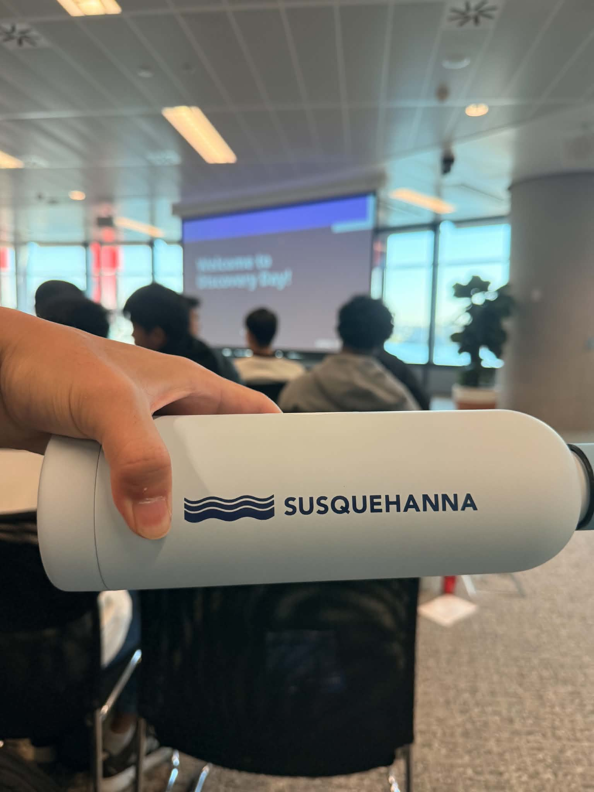
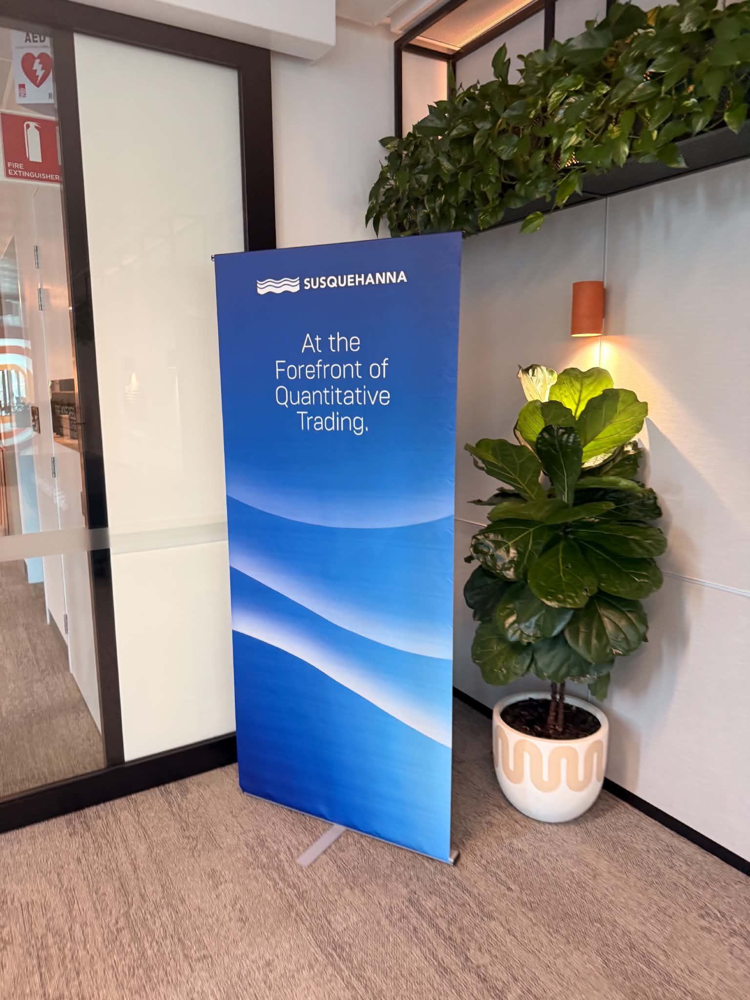
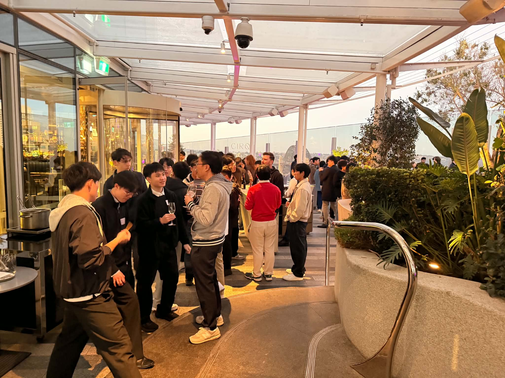
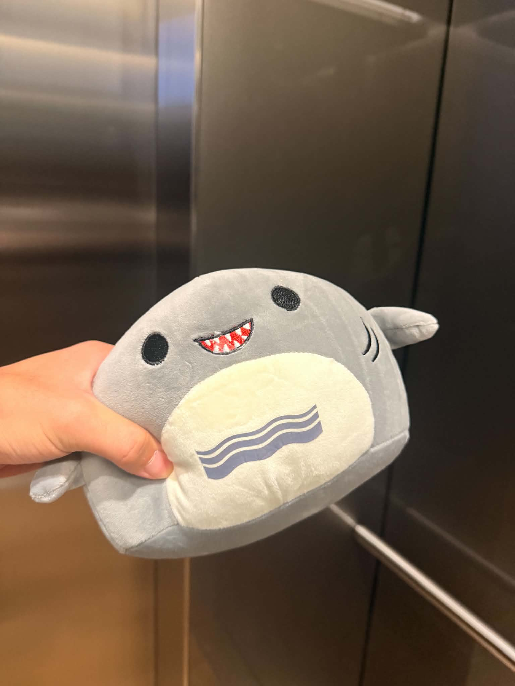
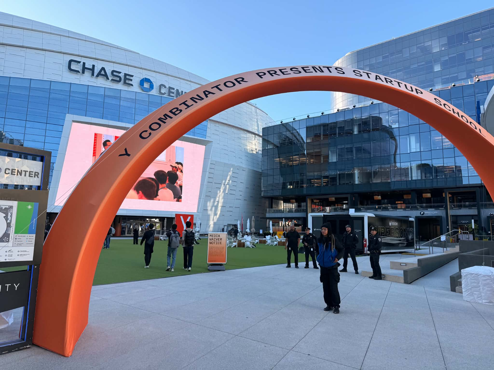
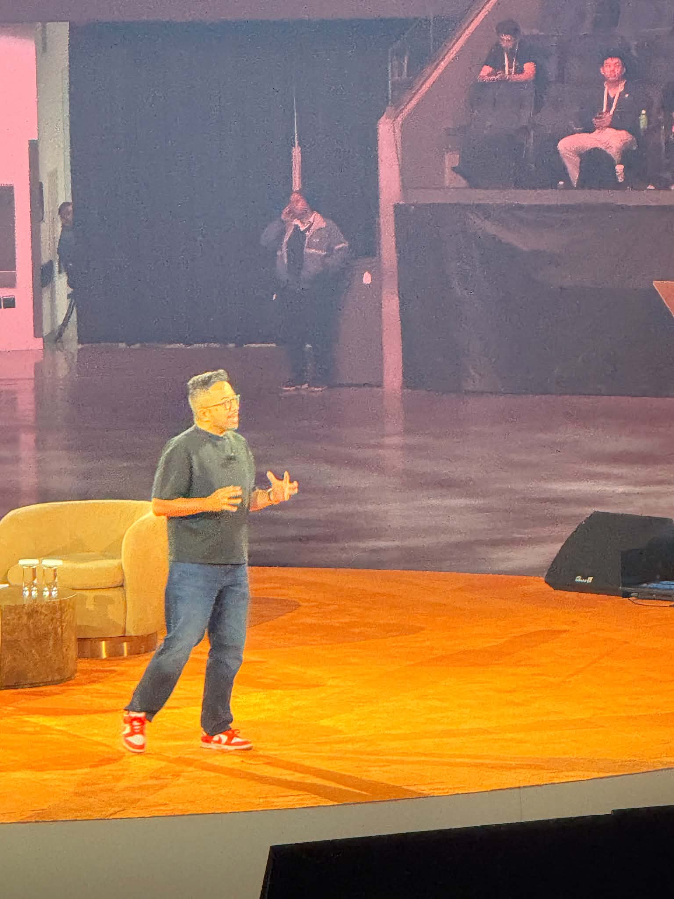
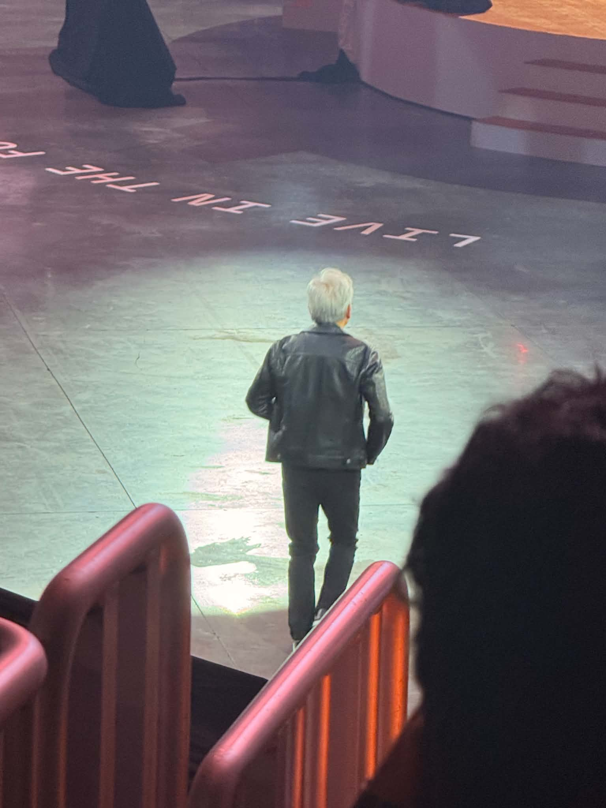
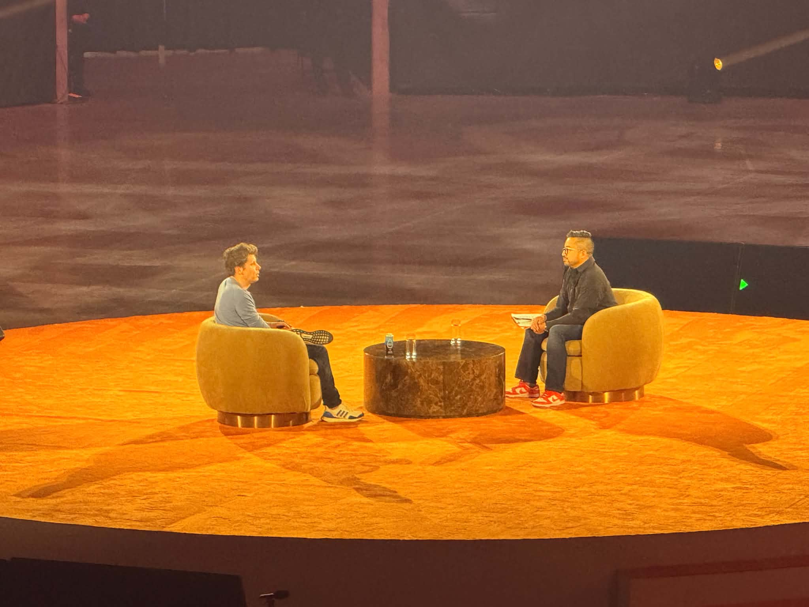

Notes from outside the classroom
Events.
A few notes and photos from events I've attended, and the things they got me thinking about.
01 / SIG
SIG Discovery Day
I attended SIG Discovery Day to learn more about Susquehanna and what working in quantitative trading looks like. With my background in mathematics and computer science, I'm interested in how probability, data, and programming come together when making decisions under uncertainty.
Quant appeals to me because it gives those ideas a practical setting. I enjoy working through a problem carefully, making my assumptions explicit, and testing whether an approach holds up. I wanted to get a better sense of how that way of thinking translates to research and trading.
The day gave me a clearer picture of SIG and how quantitative thinking connects with technology and trading. It helped me think more concretely about the field and where my own interests might fit. I came away wanting to learn more about the work and the skills behind it.




Click a photo to view it full-size.
02 / YC
YC Startup School
I attended Y Combinator's Startup School, and my main takeaway was simple: start building. The message that stayed with me was to take an idea far enough that someone can actually try it, then learn from what happens.
With my background in mathematics and computer science, I enjoy understanding ideas in depth. Startup School was a useful reminder to put that knowledge to work before every detail is settled. A small first version can reveal questions that are hard to answer by thinking alone. Getting feedback gives you something concrete to improve.
That's the mindset I want to bring to my own projects: choose a problem, make a first attempt, and keep working on it based on what I learn. The part of the event I found most useful was this emphasis on taking action and learning through the work itself.




Click a photo to view it full-size.